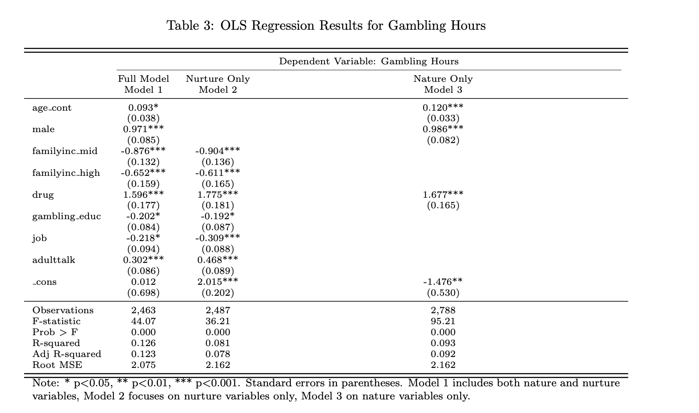
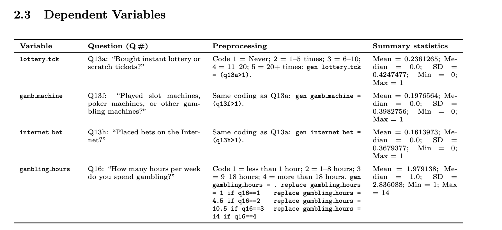

Exploring Gambling Behavior in High School Students
This project examines how nature and nurture influence high school students’ likelihood to gamble. The findings have important policy implications, inform prevention programs, and help identify which student groups are linked to risky behaviors.
The 2006 High School Risk Survey, the primary dataset used in this project, includes data from about 4,500 students across 10 Connecticut public high schools. It captures their attitudes toward risk and risky behaviors and represents the broader population of U.S. public high school students in 2006. Stata and Excel were used to analyze and visualize the data.
 Tools & Methods
- Stata
- Statistical analysis
- Data visualization
- Multivariate Linear Regression
- Logistic Regression
Additional Contributors
- Shubham Mohole
- Danish Safdariyan